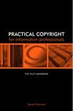

|  |
| About IR |
| Editors |
| Author instructions |
| Copyright |
| Author index |
| Subject index |
| Search |
| Reviews |
| Register |
| Home |
Norman, Sandy. Practical copyright to information professionals. London: Facet Publishing, 2004. xiv, 194 p. (The CILIP Handbook). ISBN 1-85604-490-4. £24.95.
Copyright law starts to resemble a jungle full of treacherous paths, unexpected pitfalls, and bloodthirsty animals hiding behind the trees and bushes. Most of us tread upon this ground unaware and do daily chores in educational institutions, libraries, or other organizations. Almost everyone has faced an issue related to one or another aspect of copyright or licensing. Most of the time we are aware of those aspects and try to take them into account. But the language of the laws and acts as well as bulk of the volumes explaining what lies behind these words is discouraging. The service of lawyers is beyond budgets of most of our organizations. So, we prefer to be guided by common-sense, advice from colleagues, or intuition, until something really unpleasant happens and the organizations have to face the law and the courts.
It is most welcoming (and I envy British librarians) that there are authors like Sandy Norman who provide the explanations of the copyright ruling in an accessible style and relate them to the field of information practice. It is also beneficial to have an institution like CILIP, which produces the series of handbooks in demand. The handbook consists of ten chapters of digestible length, still further divided into coherent and logical sequence of paragraphs. At the end of each the author offers a further simplification in the form of "Ten things to remember from this chapter". Thus, the structure of the handbook makes it easy to use for quick reference by identifying the encountered difficulty and finding the relevant guidance.
The chapters cover the concepts of economic and moral rights, types of protected works, length of protection, exceptions and limitations for various categories of users, public library lending, copying and fair use, various contractual solutions including licensing, infringement and case law as well as liability issues, explanation of international copyright, several case studies, lobbying activities and bodies of information professionals. In fact, it is a comprehensive overview of the main issues that anyone working in information (or education) will meet. The author also recommends some basic reading and includes a short glossary as well as some appendixes (prescribed copyright declaration forms and contact details of useful organizations).
However, any handbook of this kind can to some extent be misleading; therefore, it is worth paying attention to the disclaimer on the reverse of the title page. Both, the author and CILIP indicate that the handbook does not contain legal advice and that legal advice is the best option for doubtful cases.
Having in mind that the review is published in an international and easily accessible electronic journal, I should indicate that the handbook is based on the British law and therefore most probably will not be very helpful for information professionals working in other countries. A short chapter on international copyright and copyright in USA, Australia and South Africa serve mainly as other examples of copyright legislation and of the conflict (and defence) of the users' right to access information. The concern about the users' rights to access and use information is a guiding thread throughout the book. It also reminds us of the unbalanced representation of interests between two interest groups in the copyright field and the duty of any information professional to stand by the public and users' interest.
Dr. Elena Macevičiūtė
Vilnius University and Högskolan i Borås
June, 2004
How to cite this review
Macevičiūtė, E. (2004). Review of: Norman, Sandy. Practical copyright to information professionals. London: Facet Publishing, 2004. Information Research, 9(4), review no. R145 [Available at: http://informationr.net/ir/reviews/revs145.html]